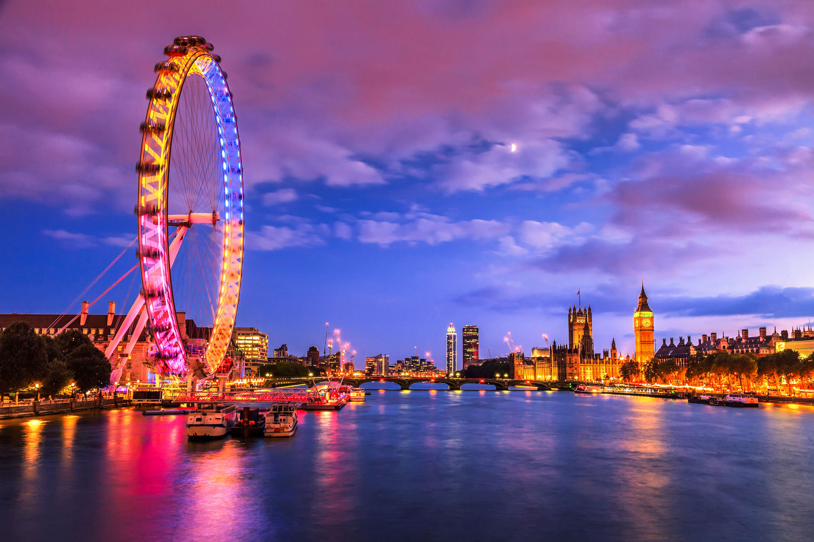
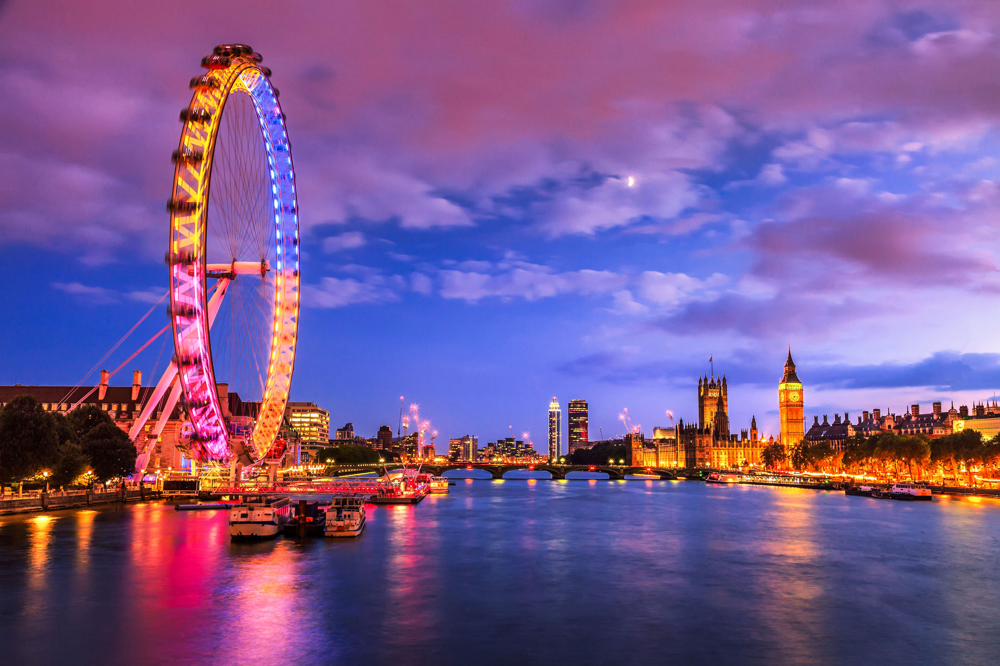
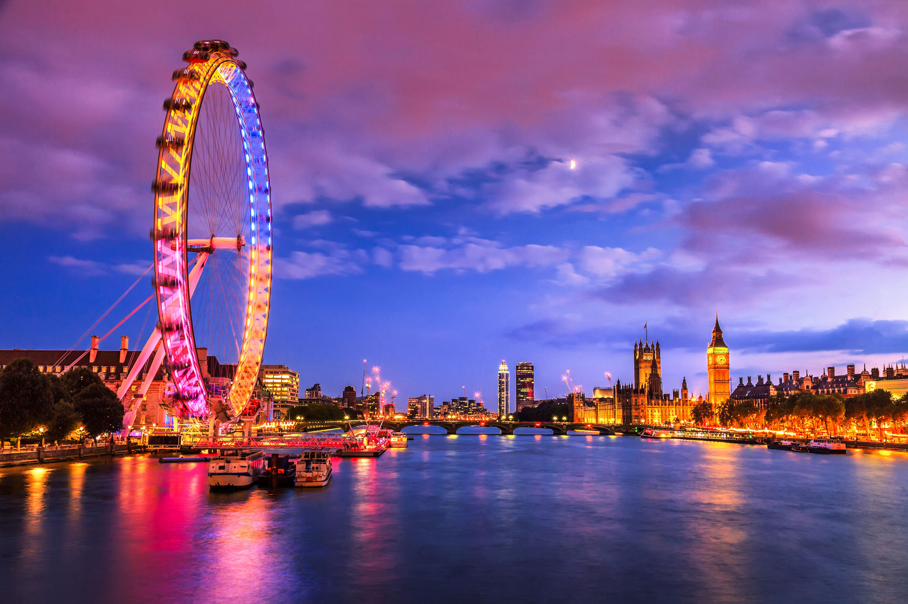
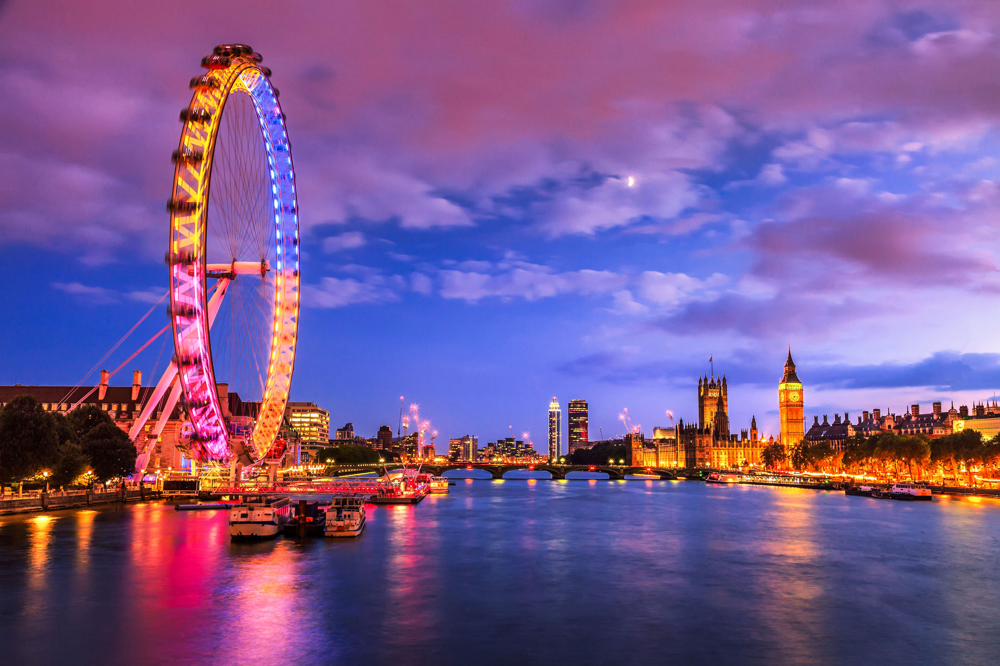

Londres située dans le sud-est de la Grande-Bretagne, est la capitale et la plus grande ville de l'Angleterre et du Royaume-Uni. Longtemps capitale de l'Empire britannique, elle est désormais le siège du Commonwealth of Nations. Fondée il y a presque 2 000 ans par les Romains sous le nom de Londinium, Londres était au xixe siècle la ville la plus peuplée du monde. Bien que largement dépassée dans ce domaine par de nombreuses mégapoles, elle reste une métropole de tout premier plan2, en raison de son rayonnement et de sa puissance économique, dû notamment à sa place de premier centre financier mondial3. Londres se place dans le rang des grands centres financiers et culturels du monde avec New York et Hong Kong, cette trilogie est appelée par les médias anglophones « Nylonkong »4.
Les régions aux alentours de Londres (aujourd'hui situées à l'intérieur des frontières du Grand Londres) semblent avoir été habitées par des Bretons insulaires depuis les temps préhistoriques, mais aucune trace archéologique n'a été mise au jour au nord du pont de Londres, lieu où la ville est véritablement née et d'où elle s'est développée. Les plus anciennes traces certaines d'installations durables remontent à l'an 43 et sont dues aux Romains qui, à la suite de leur conquête de la Bretagne, y bâtissent une première ville24. Ce premier campement est appelé Londinium. Le pont de Londres se trouvait au centre du tout nouveau réseau de routes créé par les Romains et était un lieu de passage privilégié pour traverser la Tamise, ce qui a attiré de nombreux commerçants et ainsi contribué à la croissance de la ville. Londres est vite devenue un important centre d'échanges et de commerce, la Tamise permettant d'acheminer facilement des marchandises jusqu'au cœur de la ville. Seulement 18 ans après la fondation de la ville par les Romains, la reine Boadicée, à la tête du peuple celte des Iceni, se dresse contre l'invasion romaine et prend Londres pour cible26. Le gouverneur Suetonius Paulinus, alors occupé à exterminer les druides sur l'île d'Anglesey, ne peut constituer à temps une armée pour contrer l'invasion celte. La ville est partiellement évacuée, mais des milliers de commerçants sont tués. Londres est alors totalement pillée et détruite. Des fouilles archéologiques ont permis de mettre au jour la présence de débris brûlés recouvrant des pièces et des poteries datant de 60, à l'intérieur des limites de la ville romaine. La ville est rapidement reconstruite et prospère de nouveau, à l'image du commerce en Bretagne, remplaçant Colchester en tant que capitale de la province romaine de Bretagne. Il n'existe cependant pas d'informations permettant de dater et d'expliquer le transfert de la capitale. Vers le iie siècle, la ville s'entoure de murailles : le Mur de Londres. Pendant plus d'un millénaire, les frontières de la ville sont marquées par ce mur qui délimite une zone largement englobée aujourd'hui par celle de la City. À son apogée au iiie siècle, la population de Londinium atteint entre 45 000 et 60 000 personnes suivant les sources. Lorsque l'Empire romain commence à décliner, les troupes protégeant la ville sont rappelées sur le continent, Londres commence à péricliter et sa population diminue. Il existe peu d'informations sur cette période appelée Dark Ages of London (« Les âges sombres de Londres »), mais après le départ des Romains de Grande-Bretagne en 410, il est largement établi qu'au ve siècle, Londres est en ruine et pratiquement abandonnée.
En 2014, Londres est la cinquième ville du monde en termes de PUB, et la première d'Europe devant Paris intramuros58. Le Grand Londres réalise environ un quart du PIB du Royaume-Uni, et l'aire métropolitaine de Londres environ un tiers59. La productivité est nettement supérieure à la moyenne nationale60. Très fortement tertiarisée61, Londres connaît une importante spécialisation dans la finance. La capitale britannique est la première place financière du monde et l'un des principaux centres d'affaires internationaux62. D'après une étude de fDi Markets datant de 2016, Londres est la deuxième ville mondiale ayant reçu le plus d'investissements directs étrangers après Singapour63. La ville se hisse première mondiale pour sa connectivité et deuxième pour son potentiel économique et son environnement favorable aux affaires63. L'immigration joue un rôle majeur, elle concerne des personnes de qualification très diverses, mais une des caractéristiques de la ville est sa capacité à attirer les hauts revenus et les personnes avec de hautes qualifications64. Les inégalités économiques sont fortes. Londres compte de nombreuses poches de pauvreté et le taux de chômage est plus élevé que la moyenne nationale (5,5 % au Royaume-Uni au deuxième trimestre 2006 contre 7,7 % à Londres et jusqu'à plus de 10 % dans certains quartiers de l'Inner London65) et 53 % des enfants de ces quartiers vivent dans un état de pauvreté66
L'économie de Londres s'est orientée vers les services beaucoup
plus tôt que d'autres villes européennes, surtout après la
Seconde Guerre mondiale. Le succès de Londres dans le secteur
tertiaire s'explique surtout par plusieurs des facteurs67 : *
l'anglais est une langue de communication internationale ;
* sa position de capitale de l'Empire britannique ;
* ses relations particulières avec les États-Unis et plusieurs
pays d'Asie ,
*sa position géographique qui permet à ses horaires de bureau de
correspondre à ceux d'autres pays qui comptent pour 99 % du PNB
mondial[réf. nécessaire] ;
* le droit anglais est le droit des contrats le plus utilisé en
commerce international ;
* les infrastructures multiculturelles (écoles, lieux de culte,
organisations culturelles et sociales) ;
* un niveau d'impôt relativement peu élevé surtout pour les
étrangers (les résidents non domiciliés au Royaume-Uni ne payent
pas de taxe sur les profits réalisés à l'étranger) - cependant,
la taxe du comté (équivalent de la taxe d'habitation française)
payée chaque mois est très élevée (environ 100-150
livres/mois/logement) ;
* de bonnes infrastructures de transport, surtout dans le trafic
aéroportuaire ;
* une économie dérégulée avec peu d'intervention du
gouvernement.
Londres est une des principales destinations touristiques au monde. Ce secteur génère entre 280 00080 et 350 00081 emplois selon les sources. En 2008, les revenus du tourisme représentaient 10,5 milliards £82. En 2014, Londres a reçu 17,4 millions de touristes étrangers, pour un total d'environ 28 millions83. Londres bénéficie de son statut de capitale anglophone en Europe et attire ainsi chaque année de très nombreux étudiants du continent venus apprendre la langue anglaise. Une importante économie du tourisme estudiantin s'est développée autour de cette manne, certains n'hésitant pas à en profiter par des pratiques à la limite de la légalité84. Les principaux sites touristiques londoniens sont concentrés dans le West End, qui comprend les grands magasins d’Oxford Street, les théâtres, et les quartiers tels que Soho, Covent Garden, Mayfair, Piccadilly Circus et la place de Leicester Square. Les monuments les plus célèbres de Londres sont le British Museum, la Tate Gallery, le Tate Modern, Madame Tussauds, les palais de Westminster et de Buckingham, l’Imperial War Museum, le Science Museum, la National Gallery, la National Portrait Gallery, la Tower Bridge, Big Ben, la Tour de Londres, London Eye, Cathédrale St Paul et Arsenal Football Club Museum.